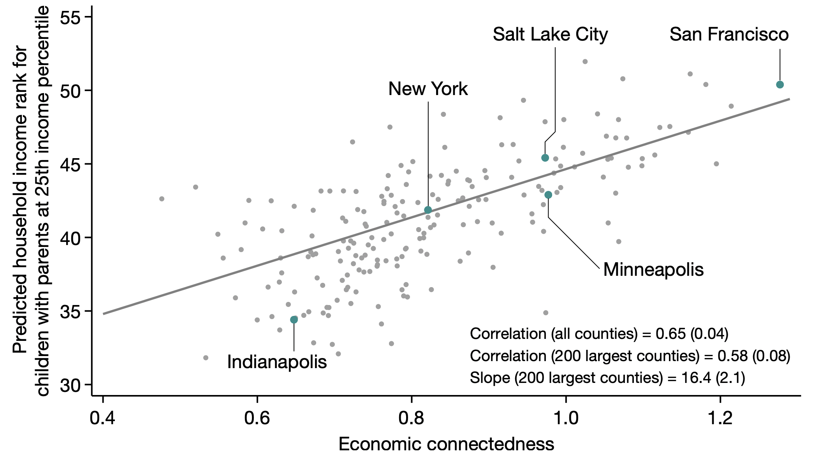

Data Structures with pandas
Contents
Data Structures with pandas#
Goals of this lecture#
In this lecture, we’ll introduce the pandas package, a really useful way to represent tabular data in Python.
Topics will include:
What is data?
What is tabular data?
Why not use a
list, adict, ornumpy?Introducing
pandas: an efficient way to store data tables.Basics of
pandas.DataFrame: creating and indexingDataFrames.
What is data?#
Data is a collection of values conveying information. This includes quantitative values (e.g.,
height,income, etc.) and qualitative values (e.g.,major,favorite food, etc.).
All empirical sciences rely on data of some kind. Can you think of examples of data from your own field?
Representing data#
Importantly, data must be represented somehow: how to do this?
Further, we often have multiple sources of data.
Example:
populationandGPDare two different measures we can calculate for each country.Can’t just represent with a single vector: it’s at least two-dimensional.
We need a way to represent this N-dimensional data.
What is tabular data?#
Tabular data is data organized in a table with rows and columns.
This kind of data is two-dimensional.
Typically, each row represents an “observation”.
A person.
A country.
An experimental trial.
Typicallly, each column represents an attribute.
heightgdporpopulationreaction_timeorexperimental_condition
Example 1: Economic connectedness#
In lecture 1, we looked at this figure showing the relationship between Economic Connectedness and Predicted Income Rank across counties.

Example 1 as tabular data#
To run this analysis (and plot the figure), the authors had to represent these data.
For example, their data includes at least:
County |
Connectedness |
Population |
Predicted Income Rank |
|---|---|---|---|
San Francisco, California |
1.31 |
870044 |
51 |
New York, New York |
0.83 |
1632480 |
42 |
Example 2: Countries#
Check-in: What does each row represent? What about each column?
Country |
Population (million) |
GDP (Trillions) |
|---|---|---|
USA |
329.5 |
20.94 |
UK |
76.22 |
2.7 |
China |
1402 |
14.72 |
Example 3: Experimental psychology#
Check-in: What does each row represent? What about each column?
Subject ID |
Condition |
Reaction Time (ms) |
|---|---|---|
1 |
Congruent |
100 |
2 |
Incongruent |
150 |
3 |
Congruent |
110 |
4 |
Incongruent |
145 |
Tabular data: interim summary#
2-dimensional data consisting of rows and columns.
Can be represented using an Excel spreadsheet (or Google Sheet).
One of the most common data structures, especially in social science.
This brings us to: how do we represent tabular data in Python?
Tabular data in Python without pandas#
Ultimately, we’ll learn about representing tabular data with
pandas.But before that, let’s consider the alternatives.
So far, we’ve learned about a couple potentially helpful data types:
list.dict.
Let’s consider each of these types in turn.
Tabular data with lists#
Tabular data consists of rows and columns.
Typically, each column corresponds to an attribute of an individual (e.g., a person).
One option is to use a separate
listfor each column.
Example: economic connectedness#
One
listrepresenting county names.Another
listrepresenting population.Another
listrepresenting economic connectedness.
county = ['SF', 'New York', 'Salt Lake']
population = [870044, 1632480, 200133]
economic_connectedness = [1.31, 0.83, 0.96]
Using this method, we can track each observation (i.e., each row) using the index.
print(county[0])
print(population[0])
print(economic_connectedness[0])
SF
870044
1.31
Discussion#
What is a potential issue using this approach?
Discussion (continued)#
Kind of awkward.
Need to remember which
listcorresponds to which attribute.Very important to name our
listvariables carefully.
Also kind of annoying to have to index into each
listseparately.
Tabular data with dicts#
A “level up” would be to represent this data using a
dict.Each key corresponds to a column name (i.e., attribute).
Each value corresponds to a
listof those attribute values.
ec_data = {'county': ['SF', 'New York', 'Salt Lake'],
'population': [870044, 1632480, 200133],
'economic_connectedness': [1.31, 0.83, 0.96]}
## Now each attribute is clearly named
ec_data['county']
['SF', 'New York', 'Salt Lake']
## But we still have to be careful about our indexing
ec_data['county'][0]
'SF'
Discussion#
What is a potential issue using this approach?
Discussion#
Better, but still kind of awkward.
Still hard to do several things:
What if we wanted each attribute for a given observation (
county,population, andeconomic_connectedness)?What if we wanted to
filterthe data according to some value (i.e.,population > 1000000)?
## To get attributes for given observation, must rely on indexing
sf = (ec_data['county'][0], ec_data['population'][0],
ec_data['economic_connectedness'][0])
sf
('SF', 870044, 1.31)
## Filtering is even harder...
## Would need many more lines of code to show!
Interim summary#
We know we need to represent tabular data.
Need a way to represent rows and columns.
A
dictis a good start: helps us track column names.But ideally, we’d have a better way of ensuring each observation in each column can be accessed in tandem.
Introducing pandas#
pandasis a package that enables fluid and efficient storage, manipulation, and analysis of data.
## Import statement
import pandas as pd
pandas.DataFrame#
The heart of
pandasis theDataFrameclass.This is a way of representing tabular data.
pd.DataFrame(...)can be used to turn adictinto aDataFrame!
## This was the dictionary we created
ec_data
{'county': ['SF', 'New York', 'Salt Lake'],
'population': [870044, 1632480, 200133],
'economic_connectedness': [1.31, 0.83, 0.96]}
## Turning this into a dataframe
df_ec = pd.DataFrame(ec_data)
df_ec
| county | population | economic_connectedness | |
|---|---|---|---|
| 0 | SF | 870044 | 1.31 |
| 1 | New York | 1632480 | 0.83 |
| 2 | Salt Lake | 200133 | 0.96 |
Check-in#
Suppose we have several lists representing attributes, like height and eye_color. How would we turn these lists into a DataFrame?
height = [70, 65, 72, 64, 65, 68, 71]
eye_color = ['blue', 'brown', 'brown', 'green', 'blue', 'brown', 'green']
### Your code here
Solution#
df_info = pd.DataFrame({
'height': height,
'eye_color': eye_color
})
df_info
| height | eye_color | |
|---|---|---|
| 0 | 70 | blue |
| 1 | 65 | brown |
| 2 | 72 | brown |
| 3 | 64 | green |
| 4 | 65 | blue |
| 5 | 68 | brown |
| 6 | 71 | green |
Working with a DataFrame#
Now that we have a
DataFrameobject, we want to be able to use thatDataFrame.This includes:
Get basic information about
DataFrame(e.g., its shape).Accessing specific columns.
Accessing specific rows.
Retrieving information about a DataFrame#
Given a
DataFrame, we might want to know things like:What is the shape of this
DataFrame?What are the names of each column?
What are the first
2rows of thisDataFrame?
Retrieving shape#
The shape attribute tells us (number_of_rows, number_of_columns).
df_info.shape
(7, 2)
Retrieving column names#
df_info.columns
Index(['height', 'eye_color'], dtype='object')
Using head and tail#
The
head(x)function displays the topxrows of theDataFrame.Similarly,
tail(x)displays the lastxrows.
df_info.head(2)
| height | eye_color | |
|---|---|---|
| 0 | 70 | blue |
| 1 | 65 | brown |
df_info.tail(2)
| height | eye_color | |
|---|---|---|
| 5 | 68 | brown |
| 6 | 71 | green |
Accessing a column/attribute#
A column can be accessed using
dataframe_name['column_name'].
## What does this syntax remind you of?
df_info['height']
0 70
1 65
2 72
3 64
4 65
5 68
6 71
Name: height, dtype: int64
Check-in#
Consider the df_ec DataFrame below. How would we access the county column?
df_ec
| county | population | economic_connectedness | |
|---|---|---|---|
| 0 | SF | 870044 | 1.31 |
| 1 | New York | 1632480 | 0.83 |
| 2 | Salt Lake | 200133 | 0.96 |
Solution (1)#
df_ec['county']
0 SF
1 New York
2 Salt Lake
Name: county, dtype: object
Solution (2)#
A column can also be accessed using the .column_name syntax.
df_ec.county
0 SF
1 New York
2 Salt Lake
Name: county, dtype: object
Check-in#
Consider the df_ec DataFrame below. How could we access multiple columns at once, e.g., county and population?
df_ec
| county | population | economic_connectedness | |
|---|---|---|---|
| 0 | SF | 870044 | 1.31 |
| 1 | New York | 1632480 | 0.83 |
| 2 | Salt Lake | 200133 | 0.96 |
Solution#
We can use the [['col_1', 'col_2']] syntax.
df_ec[['county', 'population']]
| county | population | |
|---|---|---|
| 0 | SF | 870044 |
| 1 | New York | 1632480 |
| 2 | Salt Lake | 200133 |
Accessing a row/observation#
To access an individual row by its index, we can use the
.ilocmethod.(Later, we’ll discuss accessing rows by their values using
filter.)
## Gets first row
df_ec.iloc[0]
county SF
population 870044
economic_connectedness 1.31
Name: 0, dtype: object
## Gets second and third row
df_ec.iloc[1:3]
| county | population | economic_connectedness | |
|---|---|---|---|
| 1 | New York | 1632480 | 0.83 |
| 2 | Salt Lake | 200133 | 0.96 |
Conclusion#
This concludes our introduction to pandas. Key takeaways were:
Tabular data consists of rows and columns.
pandasis a Python package for representing tabular data.pandas.DataFrameis what enables this representation format.
Next time, we’ll discuss more of what we can do with a DataFrame.